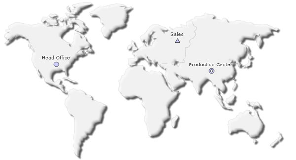
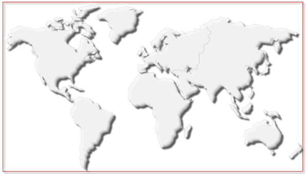
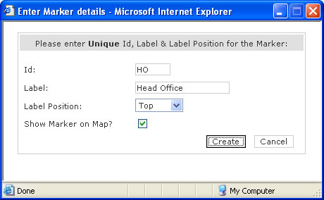
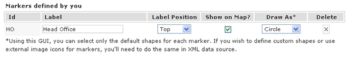
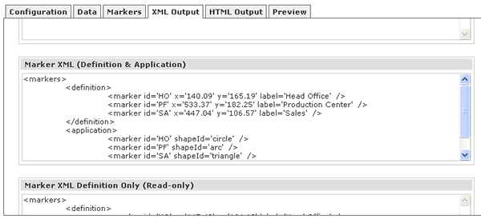

| Markers usage |
Here, we'll see how to define markers for our World Map to create the 3 office location example, as shown below. Basically, we'll create the following three markers at required locations:
 |
| Steps required to define and apply markers |
The following steps are required to define and apply markers to any map in FusionMaps XT pack:
In this section, we'll cover points 1,2,3 & 4. So, let's first get started with visually defining the markers. |
| Defining & Applying the Markers |
|
To define the markers, you'll need to run Visual Map Builder. So, launch FusionMapsGUI.html from Download Package > Tools > GUI folder. You'll get a screen asking you to select a map from the drop down list. Select the required map from the down list - World Map in this case. The World Map will now load in the GUI and you should be able to see the other GUI tabs. |
| If you do not see the drop-down populated with list of maps, you need to make sure that JavaScript is enabled for your browser. The Visual Map Builder relies completely on JavaScript to help you build and configure the maps. Please refer to your browser documentation on how to enable JavaScript. If the World Map or the tabs do not load, or you get a JavaScript error, you need to make sure that Flash Player permissions have been properly set to enable JavaScript to access the map. To know how to configure the Flash Player Global Security Settings, please read this. |
|
Now, in the GUI, switch to Markers Tab. You'll see a red rectangle around your map area. This rectangle represents the area within which you can define markers. It should look as under: Important Note: As of now, Visual Map Builder requires Flash player and Flash maps to define markers. In absence of Flash Player in your computer or device, Visual Map Builder will not be able to define markers.  To define our first marker "Head Office", click on the appropriate location in North America. You'll see a pop-up window asking for more information as shown below:  Here, you need to enter the following information:
Feed in the required information and click on Create button. That completes the creation of our first marker. When you now scroll down in the Markers Tab, you'll see that this marker has been added to our list of markers, as shown below: |
|  |
As you can see above, the new marker now appears in the list. Here, you can modify the marker's label, label position and whether to show on map. Additionally, you can also choose one of the four possible default shape for this marker - circle, arc, triangle or diamond. Or, if you need to delete this marker for some reason, you can do this by clicking the delete button. FusionMaps XT also allows you to define custom shapes or use image icons for each marker. We'll see how to do that in next section. Now, if you're curious to see this marker before defining any other markers, just switch to Preview tab, and you'll see that the new marker is now present on the map with the required label. Easy - isn't it? Similarly, define the other markers on the map by clicking at the required locations and adding the labels and positions, till you have all your markers on the map. Once the definition is done, we now need to get the XML data for these markers back. |
| Getting the XML Data |
|
To get the XML data for the defined markers, just switch to XML Output tab and scroll down till you reach the third text-area with title as "Marker XML (Definition & Application)". This text area contains the XML representation of all the markers that you've defined on this map, as shown below:  As you can see above, the GUI has generated both the <definition> and <application> code for our defined markers. You can now directly copy this and use it in your applications. Or, if you just want the definitions of the markers (without application, so that you can apply dynamically from your code), you can use the code from fourth text area in this tab - titled "Marker XML Definition Only". This text area contains only the definitions of the markers. To apply any marker, you'll need to manually place them under <application> element with proper ID matching. To make your lives easier, we've created marker definitions for important cities in the most of the maps and provided them as XM0L/JSON to you. You can re-use the definitions from those XML/JSON files present in Download Package > MarkerData folder. Before we move to defining custom shapes for markers, let's now study the XML code generated for markers. Using the XML code, you can render a lot more functionalities than possible in this GUI. |